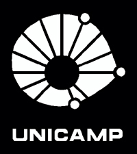

Eduardo Parducci
Let's explore the world together
-
3/2016 – nowComputer Engineering
University of Campinas - Brazil
Emphasis on Industrial Systems and Processes -
4/2020 – 3/2021Computer Science
Saarland University – Germany
Academic exchange student -
8/2014 – 7/2015Analysis and Software Development
FATEC José Crespo Gonzales, Brazil
No Degree. Interrupted study -
06/2013 – 06/2015Technician in Mechatronics

SENAI Gaspar Ricardo Junior, Brazil
Participation in national robotics competition
-
10/2020 – nowFull-stack Software Developer
Keep It Simple Solutions
Microservices development using Java Springboot and Oracle Database and Front end web development using AngularJS -
8/2020 – 10/2021Front End Web Development
PISMO
Front end web development using React, software development and performing unit and integration testing -
6/2020 – 5/2021Full-stack Web Development
German Research Centre for Artificial Intelligence
Responsible for implementing IT project strategies and task management Front end web development using VueJS and Back end development using Java and OrientDB -
12/2018 – 03/2020Full-stack Web Development
Curtir Sua Cidade – LLC
Responsible for creating, improving and developing IT project strategies and task management Front end web development using Angular and Node JS Back end development using Python and Mongo Database
Contacts Here, there will be a text regarding the selection you made in the right side menu. I'm trying to write a text long enough to see the spacing in the screen, I don't want the text to overlap with the astronaut.